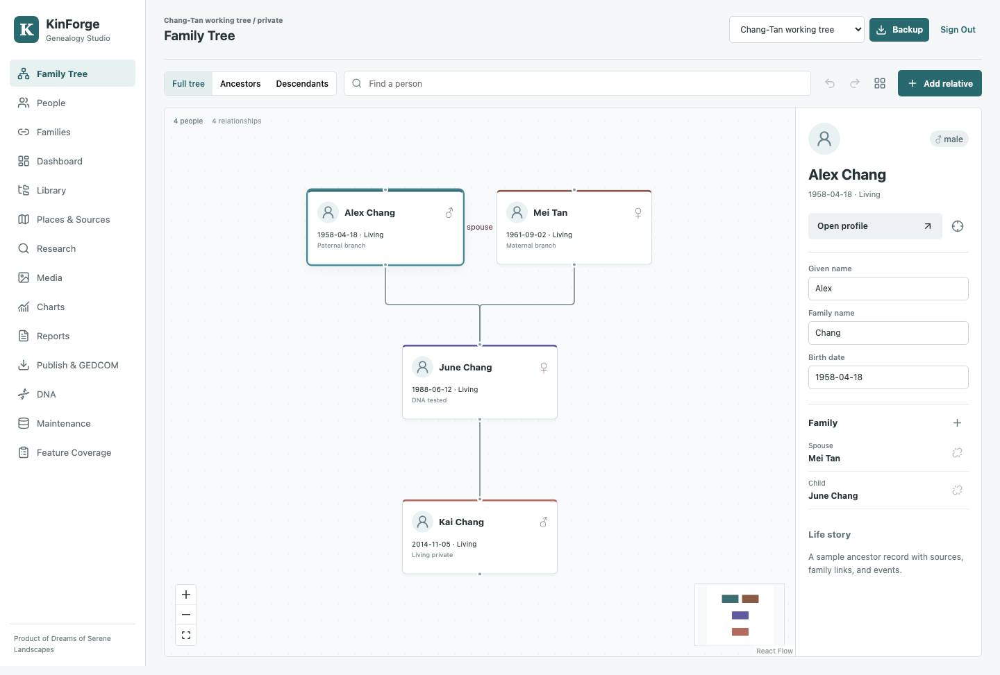

Family workspace
Editable family relationships, person profiles and chart navigation, with automatic cloud sync to your KinForge account.
Family tree, heritage, and genealogy software
Explore generations in an interactive family chart. Follow relatives into their own profiles, search the full glyph library, connect family relationships, and keep life stories, sources, photographs and evidence quality together.
Open KinForge
Separate pages for your tree, people, families, research and records. Each person's profile has its own overview, timeline, sources and media.
Editable family relationships, person profiles and chart navigation, with automatic cloud sync to your KinForge account.
Your trees, collections, subcollections, books, reports and attachments stay together. Sign in with the same KinForge email and password on Mac, Windows, iPhone, iPad or the web.
Each account has its own library. Invite another account to view or edit it. Sensitive details can stay private to the owner or be shared with signed-in invited members. Guest visitors cannot access account libraries.
Download or delete individual records, trees, books and collections. Record custody, protection and care events for people, families and relationships, with plain-language term meanings.
Search every event, relationship, disability, access and record-status symbol, with downloadable SVGs and plain-language meanings.
Scores profiles by sources, media, parentage, duplicate risk and plausibility issues, then turns weak spots into research tasks.
Archive search across people, records, sources and places, with reviewed evidence links and no provider lock-in.
No third-party research launcher or hosted processing service is required for the new local research workflow.
Version 1.3.8 adds the app-wide language switcher to the top bar while keeping tree-language settings separate in Manage Trees. Books still contain collections, collections contain subcollections, and trees/reports stay inside their selected subcollection.
Google Drive and OneDrive connections cover your private library, trees, collections, subcollections, books, media, report drafts and downloaded reports and backups. Provider registration is required before drive sign-in is available. KinForge account sync continues across devices.
Download for Apple Silicon, Intel or Windows
Installers are kept in the KinForge folder in Applications. Reports, charts, backups and other exported files stay in Downloads/KinForge Genealogy Studio.
Mac editions are available for Apple Silicon and Intel, with Windows installer and portable editions. The browser edition is installable from Safari using Add to Home Screen.
Sign in to your cloud library